Caffeine Effects#
Caffeine increase RyR opening sensitivity to luminal and subspace calcium In this model, we decrease the mid saturation sub-SR calcium concentration for the opening rate
using ModelingToolkit
using OrdinaryDiffEq, SteadyStateDiffEq, DiffEqCallbacks
using Plots
using CSV
using DataFrames
using Dates
using CaMKIIModel
using CaMKIIModel: second
Plots.default(lw=1.5)
sys = build_neonatal_ecc_sys(simplify=true, reduce_iso=true, reduce_camk=true)
tend = 500.0second
prob = ODEProblem(sys, [], tend)
stimstart = 100.0second
stimend = 300.0second
alg = KenCarp47()
function add_coffee_affect!(integrator)
integrator.ps[sys.RyRsensitivity] = 10
end
@unpack Istim = sys
callback = build_stim_callbacks(Istim, stimend; period=1second, starttime=stimstart)
SciMLBase.CallbackSet{Tuple{}, Tuple{SciMLBase.DiscreteCallback{DiffEqCallbacks.var"#111#113"{StepRangeLen{Float64, Base.TwicePrecision{Float64}, Base.TwicePrecision{Float64}, Int64}}, CaMKIIModel.var"#13#15"{Float64, Int64, Symbolics.Num}, DiffEqCallbacks.var"#112#114"{typeof(SciMLBase.INITIALIZE_DEFAULT), Bool, StepRangeLen{Float64, Base.TwicePrecision{Float64}, Base.TwicePrecision{Float64}, Int64}, CaMKIIModel.var"#13#15"{Float64, Int64, Symbolics.Num}}, typeof(SciMLBase.FINALIZE_DEFAULT), Nothing}, SciMLBase.DiscreteCallback{DiffEqCallbacks.var"#111#113"{StepRangeLen{Float64, Base.TwicePrecision{Float64}, Base.TwicePrecision{Float64}, Int64}}, CaMKIIModel.var"#14#16"{Float64, Int64, Symbolics.Num}, DiffEqCallbacks.var"#112#114"{typeof(SciMLBase.INITIALIZE_DEFAULT), Bool, StepRangeLen{Float64, Base.TwicePrecision{Float64}, Base.TwicePrecision{Float64}, Int64}, CaMKIIModel.var"#14#16"{Float64, Int64, Symbolics.Num}}, typeof(SciMLBase.FINALIZE_DEFAULT), Nothing}}}((), (SciMLBase.DiscreteCallback{DiffEqCallbacks.var"#111#113"{StepRangeLen{Float64, Base.TwicePrecision{Float64}, Base.TwicePrecision{Float64}, Int64}}, CaMKIIModel.var"#13#15"{Float64, Int64, Symbolics.Num}, DiffEqCallbacks.var"#112#114"{typeof(SciMLBase.INITIALIZE_DEFAULT), Bool, StepRangeLen{Float64, Base.TwicePrecision{Float64}, Base.TwicePrecision{Float64}, Int64}, CaMKIIModel.var"#13#15"{Float64, Int64, Symbolics.Num}}, typeof(SciMLBase.FINALIZE_DEFAULT), Nothing}(DiffEqCallbacks.var"#111#113"{StepRangeLen{Float64, Base.TwicePrecision{Float64}, Base.TwicePrecision{Float64}, Int64}}(100000.0:1000.0:300000.0), CaMKIIModel.var"#13#15"{Float64, Int64, Symbolics.Num}(-80.0, 1, Istim), DiffEqCallbacks.var"#112#114"{typeof(SciMLBase.INITIALIZE_DEFAULT), Bool, StepRangeLen{Float64, Base.TwicePrecision{Float64}, Base.TwicePrecision{Float64}, Int64}, CaMKIIModel.var"#13#15"{Float64, Int64, Symbolics.Num}}(SciMLBase.INITIALIZE_DEFAULT, true, 100000.0:1000.0:300000.0, CaMKIIModel.var"#13#15"{Float64, Int64, Symbolics.Num}(-80.0, 1, Istim)), SciMLBase.FINALIZE_DEFAULT, Bool[1, 1], nothing), SciMLBase.DiscreteCallback{DiffEqCallbacks.var"#111#113"{StepRangeLen{Float64, Base.TwicePrecision{Float64}, Base.TwicePrecision{Float64}, Int64}}, CaMKIIModel.var"#14#16"{Float64, Int64, Symbolics.Num}, DiffEqCallbacks.var"#112#114"{typeof(SciMLBase.INITIALIZE_DEFAULT), Bool, StepRangeLen{Float64, Base.TwicePrecision{Float64}, Base.TwicePrecision{Float64}, Int64}, CaMKIIModel.var"#14#16"{Float64, Int64, Symbolics.Num}}, typeof(SciMLBase.FINALIZE_DEFAULT), Nothing}(DiffEqCallbacks.var"#111#113"{StepRangeLen{Float64, Base.TwicePrecision{Float64}, Base.TwicePrecision{Float64}, Int64}}(100000.5:1000.0:300000.5), CaMKIIModel.var"#14#16"{Float64, Int64, Symbolics.Num}(0.0, 1, Istim), DiffEqCallbacks.var"#112#114"{typeof(SciMLBase.INITIALIZE_DEFAULT), Bool, StepRangeLen{Float64, Base.TwicePrecision{Float64}, Base.TwicePrecision{Float64}, Int64}, CaMKIIModel.var"#14#16"{Float64, Int64, Symbolics.Num}}(SciMLBase.INITIALIZE_DEFAULT, true, 100000.5:1000.0:300000.5, CaMKIIModel.var"#14#16"{Float64, Int64, Symbolics.Num}(0.0, 1, Istim)), SciMLBase.FINALIZE_DEFAULT, Bool[1, 1], nothing)))
Add caffeine at t = 200 econd
callback_caf = CallbackSet(build_stim_callbacks(Istim, stimend; period=1second, starttime=stimstart), PresetTimeCallback(200.0second, add_coffee_affect!))
SciMLBase.CallbackSet{Tuple{}, Tuple{SciMLBase.DiscreteCallback{DiffEqCallbacks.var"#111#113"{StepRangeLen{Float64, Base.TwicePrecision{Float64}, Base.TwicePrecision{Float64}, Int64}}, CaMKIIModel.var"#13#15"{Float64, Int64, Symbolics.Num}, DiffEqCallbacks.var"#112#114"{typeof(SciMLBase.INITIALIZE_DEFAULT), Bool, StepRangeLen{Float64, Base.TwicePrecision{Float64}, Base.TwicePrecision{Float64}, Int64}, CaMKIIModel.var"#13#15"{Float64, Int64, Symbolics.Num}}, typeof(SciMLBase.FINALIZE_DEFAULT), Nothing}, SciMLBase.DiscreteCallback{DiffEqCallbacks.var"#111#113"{StepRangeLen{Float64, Base.TwicePrecision{Float64}, Base.TwicePrecision{Float64}, Int64}}, CaMKIIModel.var"#14#16"{Float64, Int64, Symbolics.Num}, DiffEqCallbacks.var"#112#114"{typeof(SciMLBase.INITIALIZE_DEFAULT), Bool, StepRangeLen{Float64, Base.TwicePrecision{Float64}, Base.TwicePrecision{Float64}, Int64}, CaMKIIModel.var"#14#16"{Float64, Int64, Symbolics.Num}}, typeof(SciMLBase.FINALIZE_DEFAULT), Nothing}, SciMLBase.DiscreteCallback{DiffEqCallbacks.var"#111#113"{Vector{Float64}}, typeof(Main.var"##230".add_coffee_affect!), DiffEqCallbacks.var"#112#114"{typeof(SciMLBase.INITIALIZE_DEFAULT), Bool, Vector{Float64}, typeof(Main.var"##230".add_coffee_affect!)}, typeof(SciMLBase.FINALIZE_DEFAULT), Nothing}}}((), (SciMLBase.DiscreteCallback{DiffEqCallbacks.var"#111#113"{StepRangeLen{Float64, Base.TwicePrecision{Float64}, Base.TwicePrecision{Float64}, Int64}}, CaMKIIModel.var"#13#15"{Float64, Int64, Symbolics.Num}, DiffEqCallbacks.var"#112#114"{typeof(SciMLBase.INITIALIZE_DEFAULT), Bool, StepRangeLen{Float64, Base.TwicePrecision{Float64}, Base.TwicePrecision{Float64}, Int64}, CaMKIIModel.var"#13#15"{Float64, Int64, Symbolics.Num}}, typeof(SciMLBase.FINALIZE_DEFAULT), Nothing}(DiffEqCallbacks.var"#111#113"{StepRangeLen{Float64, Base.TwicePrecision{Float64}, Base.TwicePrecision{Float64}, Int64}}(100000.0:1000.0:300000.0), CaMKIIModel.var"#13#15"{Float64, Int64, Symbolics.Num}(-80.0, 1, Istim), DiffEqCallbacks.var"#112#114"{typeof(SciMLBase.INITIALIZE_DEFAULT), Bool, StepRangeLen{Float64, Base.TwicePrecision{Float64}, Base.TwicePrecision{Float64}, Int64}, CaMKIIModel.var"#13#15"{Float64, Int64, Symbolics.Num}}(SciMLBase.INITIALIZE_DEFAULT, true, 100000.0:1000.0:300000.0, CaMKIIModel.var"#13#15"{Float64, Int64, Symbolics.Num}(-80.0, 1, Istim)), SciMLBase.FINALIZE_DEFAULT, Bool[1, 1], nothing), SciMLBase.DiscreteCallback{DiffEqCallbacks.var"#111#113"{StepRangeLen{Float64, Base.TwicePrecision{Float64}, Base.TwicePrecision{Float64}, Int64}}, CaMKIIModel.var"#14#16"{Float64, Int64, Symbolics.Num}, DiffEqCallbacks.var"#112#114"{typeof(SciMLBase.INITIALIZE_DEFAULT), Bool, StepRangeLen{Float64, Base.TwicePrecision{Float64}, Base.TwicePrecision{Float64}, Int64}, CaMKIIModel.var"#14#16"{Float64, Int64, Symbolics.Num}}, typeof(SciMLBase.FINALIZE_DEFAULT), Nothing}(DiffEqCallbacks.var"#111#113"{StepRangeLen{Float64, Base.TwicePrecision{Float64}, Base.TwicePrecision{Float64}, Int64}}(100000.5:1000.0:300000.5), CaMKIIModel.var"#14#16"{Float64, Int64, Symbolics.Num}(0.0, 1, Istim), DiffEqCallbacks.var"#112#114"{typeof(SciMLBase.INITIALIZE_DEFAULT), Bool, StepRangeLen{Float64, Base.TwicePrecision{Float64}, Base.TwicePrecision{Float64}, Int64}, CaMKIIModel.var"#14#16"{Float64, Int64, Symbolics.Num}}(SciMLBase.INITIALIZE_DEFAULT, true, 100000.5:1000.0:300000.5, CaMKIIModel.var"#14#16"{Float64, Int64, Symbolics.Num}(0.0, 1, Istim)), SciMLBase.FINALIZE_DEFAULT, Bool[1, 1], nothing), SciMLBase.DiscreteCallback{DiffEqCallbacks.var"#111#113"{Vector{Float64}}, typeof(Main.var"##230".add_coffee_affect!), DiffEqCallbacks.var"#112#114"{typeof(SciMLBase.INITIALIZE_DEFAULT), Bool, Vector{Float64}, typeof(Main.var"##230".add_coffee_affect!)}, typeof(SciMLBase.FINALIZE_DEFAULT), Nothing}(DiffEqCallbacks.var"#111#113"{Vector{Float64}}([200000.0]), Main.var"##230".add_coffee_affect!, DiffEqCallbacks.var"#112#114"{typeof(SciMLBase.INITIALIZE_DEFAULT), Bool, Vector{Float64}, typeof(Main.var"##230".add_coffee_affect!)}(SciMLBase.INITIALIZE_DEFAULT, true, [200000.0], Main.var"##230".add_coffee_affect!), SciMLBase.FINALIZE_DEFAULT, Bool[1, 1], nothing)))
@time sol = solve(prob, alg; callback)
@time sol_caf = solve(prob, alg; callback=callback_caf)
11.298458 seconds (23.43 M allocations: 1.090 GiB, 3.59% gc time, 76.40% compilation time)
5.066561 seconds (4.22 M allocations: 233.924 MiB, 1.20% gc time, 45.49% compilation time)
retcode: Success
Interpolation: 3rd order Hermite
t: 8895-element Vector{Float64}:
0.0
0.019333123284849308
0.09098129546757994
0.20735582943983855
0.45611910276862533
1.0472562928406122
2.0342667657223696
3.451776641148454
6.733792423912806
12.450117081023194
⋮
404642.83277566
414876.95827256143
425667.56049853395
437210.42549690785
449697.91880315664
462185.41210940544
477837.27149518696
495715.4111476532
500000.0
u: 8895-element Vector{Vector{Float64}}:
[0.0026, 830.0, 830.0, 0.00702, 0.966, 0.22156, 0.09243, 0.00188, 0.00977, 0.26081 … 0.12113, 0.12113, 0.12113, 0.12113, 0.12113, 0.12113, 0.12113, -68.79268, 13838.37602, 150952.75035000002]
[0.0025985659590295374, 829.9994975880693, 829.9999654017583, 0.007020208561323646, 0.9660018276402699, 0.2215639938807744, 0.09242766669618695, 0.001879826176081169, 0.009769882842069916, 0.2608055799112056 … 0.12113000000000405, 0.12113000000038378, 0.12113000001389383, 0.12113000037367234, 0.12113000811850358, 0.1211301421535992, 0.1211319185255175, -68.79732946186226, 13838.375711519551, 150952.7504077194]
[0.002593310524681686, 829.9976422525165, 829.9998348635061, 0.00702008986027517, 0.9660085993318799, 0.2215787945110049, 0.09241901973901424, 0.0018789042446514422, 0.009769459049732313, 0.26078941009382306 … 0.12113000089551408, 0.12113000693481112, 0.12113004704056851, 0.12113027926811751, 0.12113143375871603, 0.12113624253259858, 0.12115248970210647, -68.81607005265552, 13838.374513299192, 150952.75062244057]
[0.0025849478335103777, 829.9946506157202, 829.9996133960318, 0.007017234889558555, 0.9660195931792828, 0.22160283236040595, 0.09240497563401104, 0.0018766436937193197, 0.009768805322556195, 0.2607638707001999 … 0.12113010483012125, 0.12113038966346881, 0.12113131833063846, 0.12113403405679994, 0.12114109135582983, 0.12115723910142133, 0.12118951551963694, -68.84681913285226, 13838.372555328333, 150952.7509740238]
[0.00256770780104998, 829.9883445519497, 829.9990964774663, 0.0070030143052343926, 0.9660430731013478, 0.2216542075240971, 0.0923749578279845, 0.0018699196262940564, 0.00976754294689657, 0.2607122383588733 … 0.12113292110288297, 0.12113633873395534, 0.12114295934422185, 0.1211549441109046, 0.12117519662647316, 0.12120713813483533, 0.12125418995384044, -68.91207316777846, 13838.368384399068, 150952.7517373371]
[0.0025298083713907005, 829.9738229154025, 829.9976227528975, 0.006946470397388757, 0.9660987611411453, 0.22177624785138977, 0.09230364339951613, 0.0018505337694469416, 0.009765228548607825, 0.26060507831375035 … 0.12115849269665876, 0.12117335985880447, 0.12119414515426223, 0.12122229800810431, 0.12125925929399749, 0.12130632552358435, 0.12136450208851982, -69.06429960994137, 13838.358559292059, 150952.75361533565]
[0.0024748079782158957, 829.9509077855928, 829.9944193668179, 0.0068337541728754475, 0.9661914345949096, 0.2219798989175973, 0.09218462776986637, 0.0018178174419014681, 0.009763403076884485, 0.26047114911179464 … 0.121224541218447, 0.12125242557826559, 0.12128628091507473, 0.12132672249013034, 0.12137426379919634, 0.12142927821043341, 0.12149196513254243, -69.31024285744343, 13838.34240329337, 150952.75694915713]
[0.0024106893964811315, 829.9205247545176, 829.9883533251192, 0.006675512062656749, 0.9663239343003682, 0.22227216398019892, 0.09201383579531924, 0.0017738156907532244, 0.009765046552800477, 0.2603648729749554 … 0.12132150441596071, 0.1213585548820791, 0.12140052118634265, 0.12144759471003594, 0.12149988983034501, 0.12155743299711903, 0.1216201542687696, -69.64637448767432, 13838.319723120678, 150952.76215620188]
[0.002310655727734336, 829.8589858006806, 829.9689941817725, 0.006355039713677859, 0.9666286957812559, 0.22294828828976576, 0.09161908329520764, 0.0016855899094922325, 0.009786689200123853, 0.26041507667541997 … 0.12150439833798567, 0.12154722283384199, 0.12159304920072046, 0.1216418099553358, 0.12169340184085989, 0.12174768443532383, 0.12180447948880607, -70.35063788657428, 13838.2694938995, 150952.77598869594]
[0.0022289950402245105, 829.7704141396295, 829.923524981244, 0.005926150085676071, 0.9671554512230358, 0.22412560303273427, 0.09093422465365385, 0.0015688568862426045, 0.009873892913308327, 0.26104417804603025 … 0.12171274673876376, 0.12175152667167376, 0.12179171693004416, 0.12183318573340746, 0.12187579038290353, 0.12191937753328339, 0.12196378364408178, -71.35304509818071, 13838.18882346682, 150952.80529264064]
⋮
[0.11477296407785413, 50.16579994708199, 51.467761138570864, 0.006580600194152545, 0.9997081294533994, 0.9997100452130585, 0.0016646983815690331, 0.0025510910170928333, 0.0016480795536742163, 0.0012386633269878898 … 0.13230521371589632, 0.13230522983495788, 0.13230524134626304, 0.1323052483449152, 0.13230525092224227, 0.1323052491659815, 0.13230524316045392, -69.75660133663101, 13242.932909119803, 151635.85176429947]
[0.1132197910437024, 50.468455714900266, 51.76049209794505, 0.006620636256263347, 0.9997024615622259, 0.9997043491012538, 0.0016861437195107697, 0.0025680537310288974, 0.0016590421657154217, 0.001255944999148263 … 0.13177128075726, 0.13177129729574108, 0.13177130948243304, 0.13177131740744405, 0.13177132115729545, 0.13177132081509738, 0.13177131646071436, -69.66737703562171, 13197.79218004906, 151681.00196419843]
[0.11169163279729839, 50.77174641144316, 52.05396582856501, 0.006661615302732421, 0.9996965815013197, 0.9996984372138298, 0.0017082448122872221, 0.0025854254311685173, 0.0016702674070906037, 0.0012737005631606295 … 0.13124191485729592, 0.13124193178468072, 0.13124194458418909, 0.1312419533415938, 0.1312419581392504, 0.13124195905626468, 0.13124195616865017, -69.57660462496513, 13152.401386595266, 151726.401808974]
[0.1101724504950277, 51.08003150500989, 52.352444554927, 0.00670406867966629, 0.9996904063719019, 0.9996922269409797, 0.0017312934486809995, 0.0026034317249037132, 0.001681902546897462, 0.00129224210190928 … 0.1307113976596775, 0.13071141446935186, 0.1307114273953146, 0.1307114365184574, 0.13071144191644654, 0.13071144366388082, 0.13071144183244063, -69.48314949688195, 13106.229735704703, 151772.58197647537]
[0.1086518983237951, 51.39580020391519, 52.658349440200034, 0.0067484075236022125, 0.9996838655867533, 0.9996856471003631, 0.0017555295550835005, 0.0026222479519466477, 0.0016940624936115456, 0.0013118104615411812 … 0.13017611102090462, 0.1301761273685524, 0.1301761400839796, 0.13017614924300247, 0.1301761549184085, 0.13017615718010475, 0.13017615609525762, -69.38616925314099, 13058.911138469903, 151819.908437489]
[0.10724649841769637, 51.69232188360111, 52.94570275197807, 0.006791103721883557, 0.999677477087892, 0.9996792154158322, 0.0017790381092315732, 0.002640377375522319, 0.0017057757332161595, 0.001330715788028561 … 0.12967755664554423, 0.12967757337995095, 0.12967758668720888, 0.1296775966390525, 0.12967760330436362, 0.12967760674931086, 0.12967760703748174, -69.29337825572355, 13014.180737793942, 151864.64616886838]
[0.1056350613551117, 52.04103729256366, 53.28385423844235, 0.006842367227160395, 0.9996696908725425, 0.9996713746207759, 0.001807466532100176, 0.002662156907035235, 0.0017198495416695238, 0.0013537053328055882 … 0.12910103229828393, 0.12910104887555363, 0.12910106229133264, 0.12910107261193018, 0.1291010799010299, 0.12910108421981847, 0.12910108562710712, -69.18273023196765, 12961.551301078964, 151917.28332729905]
[0.10397554996816916, 52.40885176814805, 53.640725682331095, 0.006897952775113231, 0.99966110347649, 0.9996627216036339, 0.0018385490667726574, 0.0026857883124619232, 0.0017351204914094229, 0.0013788849925452952 … 0.12850186931666926, 0.12850188548026936, 0.12850189876115203, 0.12850190921994242, 0.12850191691487112, 0.12850192190189166, 0.12850192423479107, -69.06367777224986, 12905.767958855684, 151973.07403680345]
[0.10360449294126935, 52.49237572219542, 53.72179394439448, 0.006910803734772764, 0.9996590963966573, 0.9996606997486568, 0.0018457731212246093, 0.002691254161866562, 0.0017386526875654384, 0.0013847446293447274 … 0.12836713297570737, 0.1283671489794005, 0.12836716216615693, 0.12836717259529554, 0.1283671803237882, 0.12836718540637468, 0.12836718789567125, -69.03628984949934, 12893.059355789426, 151985.7841963894]
i = (sys.t / 1000, sys.vm)
plot(sol, idxs=i, title="Action potential", lab="Ctl", tspan=(198second, 205second))
plot!(sol_caf, idxs=i, lab="Caf", tspan=(198second, 205second), ylabel="Voltage (mV)", xlabel="Time (s)")
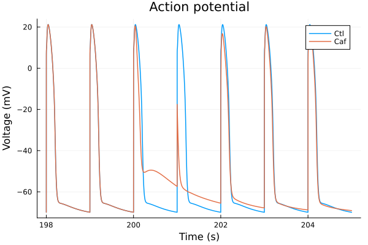
i = (sys.t / 1000, sys.Cai_sub_SR * 1000)
plot(sol, idxs=i, title="Calcium transient (During caffeine addition)", lab="Ctl", tspan=(198second, 205second))
plot!(sol_caf, idxs=i, tspan=(198second, 205second), lab="Caf", ylabel="Subspace calcium (nM)", xlabel="Time (s)")
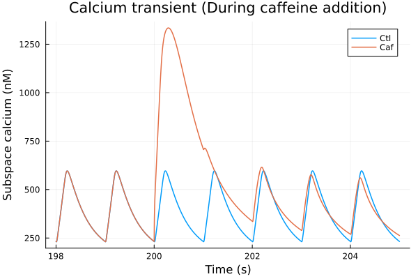
i = (sys.t / 1000, sys.PO1RyR)
plot(sol, idxs=i, title="RyR open (During caffeine addition)", lab="Ctl", tspan=(198second, 205second))
plot!(sol_caf, idxs=i, tspan=(198second, 205second), lab="Caf", ylabel="Open probability", ylims=(0, 1), xlabel="Time (s)")
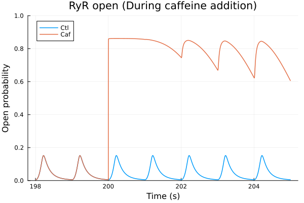
i = (sys.t / 1000, sys.Cai_sub_SR * 1000)
plot(sol, idxs=i, title="Calcium transient (After caffeine addition)", lab="Ctl", ylabel="Subspace calcium (nM)", tspan=(198second, 205second))
plot!(sol_caf, idxs=i, lab="Caf", xlabel="Time (s)", tspan=(198second, 205second))
i = (sys.t / 1000, sys.CaJSR)
plot(sol, idxs=i, title="SR Calcium (During caffeine addition)", lab="Ctl", ylabel="SR calcium (μM)", tspan=(198second, 205second))
plot!(sol_caf, idxs=i, tspan=(198second, 205second), lab="Caf", ylims=(0, 850), xlabel="Time (s)")
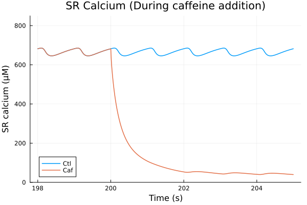
i = (sys.t / 1000, sys.Jrel)
plot(sol, idxs=sys.Jrel, title="Ca flux", lab="Ctl (Jrel)", tspan=(198second, 205second))
plot!(sol_caf, idxs=sys.Jrel, lab="Caf (Jrel)", tspan=(198second, 205second), ylabel="μM/ms", xlabel="Time (s)")
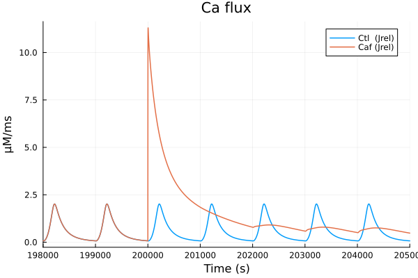
i = (sys.t / 1000, sys.CaMKAct * 100)
plot(sol, idxs=i, title="Active CaMKII", lab="Ctl")
plot!(sol_caf, idxs=i, lab="Caf", ylabel="CaMKII activity (%)", xlabel="Time (s)")
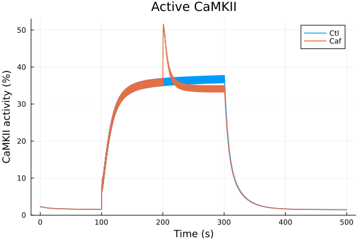
Simulation vs experimental data#
Add caffeine in the beginning of the simulation Add caffeine and nifedipine in the beginning of the simulation (nifedipine blocks 90% of L-type calcium channel)
sys = build_neonatal_ecc_sys(simplify=true, reduce_iso=true, reduce_camk=true)
tend = 205second
stimstart = 30second
stimend = 120second
alg = KenCarp47()
@unpack Istim = sys
callback = build_stim_callbacks(Istim, stimend; period=1second, starttime=stimstart)
prob = ODEProblem(sys, [], tend)
prob_caf = ODEProblem(sys, [sys.RyRsensitivity => 10], tend)
gCaL = prob.ps[sys.GCaL]
prob_nif_caf = ODEProblem(sys, [sys.RyRsensitivity => 10, sys.GCaL => 0.1 * gCaL], tend)
@time sol = solve(prob, alg; callback)
@time sol_caf = solve(prob_caf, alg; callback)
@time sol_nif_caf = solve(prob_nif_caf, alg; callback)
6.947371 seconds (20.53 M allocations: 909.659 MiB, 3.47% gc time, 83.67% compilation time)
1.209385 seconds (39.06 k allocations: 8.509 MiB)
0.811787 seconds (31.72 k allocations: 6.716 MiB)
retcode: Success
Interpolation: 3rd order Hermite
t: 3176-element Vector{Float64}:
0.0
0.01909847405970621
0.09056276966611176
0.2066569852289616
0.4547307783275887
1.1953594354007893
2.502500491431298
4.2762382565127135
7.010765847612886
11.186106370617878
⋮
141892.40379801008
146683.15008929532
152766.93500274056
159602.04940327266
167970.44149328943
178627.4799712433
190146.85513215893
202276.8501284552
205000.0
u: 3176-element Vector{Vector{Float64}}:
[0.0026, 830.0, 830.0, 0.00702, 0.966, 0.22156, 0.09243, 0.00188, 0.00977, 0.26081 … 0.12113, 0.12113, 0.12113, 0.12113, 0.12113, 0.12113, 0.12113, -68.79268, 13838.37602, 150952.75035000002]
[0.01720883026979937, 829.9981045688384, 829.9999655875564, 0.007020204633340147, 0.9660018054574051, 0.22156394540578322, 0.09242769501499327, 0.0018798275101706249, 0.00976988428390901, 0.26080563392118083 … 0.12113000000000329, 0.12113000000032005, 0.12113000001175056, 0.12113000032000881, 0.12113000703672673, 0.12113012466854782, 0.12113170191627148, -68.79747668293534, 13838.375715357333, 150952.75040702018]
[0.06973500315795568, 829.9668913233489, 829.9998077185605, 0.007020051385220101, 0.9660085597489393, 0.221578708034568, 0.09241907023233151, 0.0018788907605363002, 0.009769462067515647, 0.26078951480369794 … 0.12113000078795605, 0.12113000613039548, 0.1211300417611258, 0.1211302489284948, 0.12113128294759092, 0.12113560628795893, 0.12115026378958338, -68.8169363590153, 13838.374520339885, 150952.75062122484]
[0.14864787870370388, 829.8399469194583, 829.9992576524241, 0.007017053661983389, 0.9660195270007164, 0.22160268789743462, 0.09240505988422203, 0.0018765675952482827, 0.009768812114789992, 0.26076407979573635 … 0.1211300934406679, 0.12113034825147195, 0.12113118119576555, 0.12113362294565173, 0.12113998241458683, 0.12115456179090098, 0.1211837493462364, -68.84887953098003, 13838.37256638906, 150952.750972123]
[0.2946523885849519, 829.289899251388, 829.9951389377022, 0.007002262530688034, 0.9660429412796757, 0.22165392025410527, 0.09237512493713543, 0.0018696134924433702, 0.009767563343798958, 0.2607127964563843 … 0.12113261978382589, 0.12113569416858493, 0.12114165882255999, 0.12115247043377665, 0.12117076083055378, 0.12119963324368882, 0.12124219089745428, -68.9166230715567, 13838.368406470609, 150952.75173410666]
[0.5876580398639615, 826.008568057493, 829.9297790762276, 0.006926153583863354, 0.9661126848126537, 0.22180681104822983, 0.09228577743657544, 0.0018441699647855972, 0.009764882034297614, 0.2605833936188816 … 0.12116391933719214, 0.12117963644736084, 0.12120085603852399, 0.12122871825016097, 0.12126431647130773, 0.1213085990432655, 0.1213622674257114, -69.11458432974472, 13838.356112841531, 150952.75410728142]
[0.7911803032818656, 817.426466714726, 829.4928274142436, 0.006770286710419844, 0.9662352542733942, 0.222076450733539, 0.09212818186222439, 0.0017997685746513042, 0.009763761307773292, 0.26043333762383264 … 0.12124508453998674, 0.12127374702881932, 0.12130748684788391, 0.12134667647365747, 0.12139160120479127, 0.12144243689930334, 0.12149923118269772, -69.44892643344032, 13838.334856605055, 150952.75864740528]
[0.8496071258416505, 804.9823931289039, 828.1244707270769, 0.006572316636307429, 0.9664007030686977, 0.22244204605115564, 0.09191454686742465, 0.0017449930546053923, 0.009769229009247623, 0.26036373360206355 … 0.1213526404368163, 0.12138710381471755, 0.12142587412154052, 0.12146886796708764, 0.12151599166004598, 0.12156712132880786, 0.12162208897928714, -69.87338731707615, 13838.306880250326, 150952.76549528376]
[0.8596432838271023, 787.585474670004, 824.4432510440085, 0.006305865764875728, 0.9666543318680192, 0.2230053193638679, 0.09158574579401339, 0.001671721902106557, 0.009792114380904847, 0.2604814898490257 … 0.12161823268954462, 0.12162182332057142, 0.12163654497695234, 0.12166047868179188, 0.12169210414415485, 0.12173022619300863, 0.12177391727759845, -70.46551689475245, 13838.265611210401, 150952.77749666924]
[0.8606958125317057, 765.2421610892852, 816.1210930405678, 0.005976439158415011, 0.9670395235865392, 0.2238653200060872, 0.09108519024970405, 0.001581945178997039, 0.009855909833523262, 0.26097104192019027 … 0.1231721479750464, 0.12295985085529501, 0.12279672738165051, 0.1226767957756424, 0.12259509859299199, 0.12254762697226289, 0.12253125388823811, -71.23429141950854, 13838.206750633512, 150952.79884587755]
⋮
[0.0974498494986878, 53.87294597479597, 55.060791076966076, 0.006505163965711132, 0.9997183920688317, 0.9984876717580422, 0.0016250492088610907, 0.002519152301139653, 0.0016274627755459051, 0.00120701520921415 … 0.12609583034760333, 0.12609586263975658, 0.12609589015054612, 0.12609591298215073, 0.1260959312327363, 0.12609594499665297, 0.12609595436462107, -69.92619190608659, 13098.580946344266, 151780.2537582852]
[0.0968147189641605, 54.03078907850621, 55.21432204668454, 0.00652036798761128, 0.9997164303152687, 0.9993716024067076, 0.001633078833282433, 0.0025255888427262742, 0.0016316220639518851, 0.0012134444444800597 … 0.12585583976479456, 0.1258558720101485, 0.12585589960189134, 0.1258559226393303, 0.1258559412178585, 0.1258559554291473, 0.12585596536132695, -69.89184063893559, 13079.72834027901, 151799.10725783458]
[0.09603620272289748, 54.22632366013911, 55.404553687834415, 0.0065394005711776355, 0.999714021983984, 0.9996461355332846, 0.001643161137832797, 0.002533642936463788, 0.0016368273111036827, 0.0012215523815222108 … 0.12556031386939737, 0.12556034575523836, 0.12556037313153773, 0.12556039609437739, 0.12556041473603216, 0.125560429145156, 0.12556043940695769, -69.84898412420195, 13056.362335182726, 151822.47423032208]
[0.09519515810709221, 54.43964466888778, 55.61212289203569, 0.006560353800422602, 0.9997110460781364, 0.9997010015822492, 0.0016543028696225767, 0.0025425146125194883, 0.0016425609160215793, 0.0012304975842266767 … 0.1252394983660416, 0.1252395300383709, 0.12523955732604558, 0.12523958032278057, 0.12523959911858043, 0.12523961379992118, 0.12523962444992148, -69.80192964686329, 13030.84969619843, 151847.98776146272]
[0.09421236222624188, 54.69291003536413, 55.8586446551288, 0.006585378227500574, 0.9997074123391713, 0.9997075992411415, 0.0016676540723965072, 0.0025531134763016835, 0.0016494091159388001, 0.00124119009040315 … 0.12486235580080712, 0.12486238697579609, 0.1248624139421924, 0.12486243679011509, 0.12486245560611874, 0.12486247047336813, 0.12486248147180289, -69.74592640799719, 13000.665400800941, 151878.17279627945]
[0.09302972365393657, 55.00266030220316, 56.16024174052982, 0.0066162703281838235, 0.9997029847773513, 0.9997043248209735, 0.0016842136756990607, 0.0025662022027441384, 0.0016578673139874345, 0.0012544827877574666 … 0.12440548098234994, 0.12440551168661282, 0.12440553837919828, 0.12440556114622943, 0.12440558007042417, 0.12440559523126217, 0.1244056067051422, -69.67708169998993, 12963.822463343318, 151915.01623671915]
[0.09183356493404243, 55.32248192894628, 56.47177334112387, 0.006648463215386666, 0.9996984395335968, 0.9996997592103246, 0.0017015586044043889, 0.002579847721523381, 0.0016666854472267012, 0.00126843523794321 … 0.1239395335764829, 0.1239395638464893, 0.12393959031708436, 0.12393961307008385, 0.12393963218406762, 0.12393964773453828, 0.12393965979407055, -69.60567734743294, 12925.918644555966, 151952.92000424507]
[0.0906581135694965, 55.64273721835807, 56.783839755387305, 0.006681045826840535, 0.9996937127899479, 0.9996950142242597, 0.0017192069281064958, 0.00259366405563909, 0.0016756141719583583, 0.0012826423094013308 … 0.12347819164570592, 0.12347822124959514, 0.12347824724866266, 0.12347826972071826, 0.12347828874049369, 0.12347830437979347, 0.12347831670763716, -69.53375865331681, 12888.050918866351, 151990.7871541995]
[0.09040637839871143, 55.712438178499816, 56.85178139189731, 0.006688186756932512, 0.9996926977606411, 0.9996939919567776, 0.0017230862778111027, 0.0025966919619587543, 0.0016775711364971867, 0.0012857749191091507 … 0.12337881703410399, 0.12337884592619, 0.12337887125280253, 0.12337889309090987, 0.12337891151443728, 0.12337892659441638, 0.12337893839912581, -69.51804987396164, 12879.827871891308, 151999.00997601973]
i = (sys.t / 1000, sys.vm)
tspan = (100second, 102second)
plot(sol, idxs=i, title="Action potential", lab="Ctl"; tspan)
plot!(sol_caf, idxs=i, lab="Caf"; tspan)
plot!(sol_nif_caf, idxs=i, lab="Caf + Nif", tspan=tspan, ylabel="Voltage (mV)", xlabel="Time (s)")
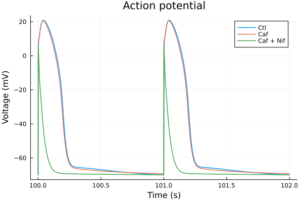
i = (sys.t / 1000, sys.Cai_sub_SR * 1000)
tspan = (100second, 102second)
plot(sol, idxs=i, title="Calcium transient", lab="Ctl"; tspan)
plot!(sol_caf, idxs=i, lab="Caf", ylabel="Subspace calcium (nM)"; tspan)
plot!(sol_nif_caf, idxs=i, lab="Caf + Nif", ylabel="Subspace calcium (nM)", xlabel="Time (s)"; tspan)
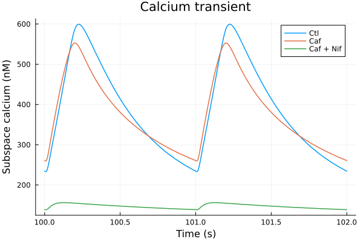
i = (sys.t / 1000, sys.CaJSR)
tspan = (100second, 102second)
plot(sol, idxs=i, title="SR Calcium", lab="Ctl", ylabel="SR calcium (μM)"; tspan)
plot!(sol_caf, idxs=i, lab="Caf"; tspan)
plot!(sol_nif_caf, idxs=i, lab="Caf + Nif", ylims=(0, 850), xlabel="Time (s)"; tspan)
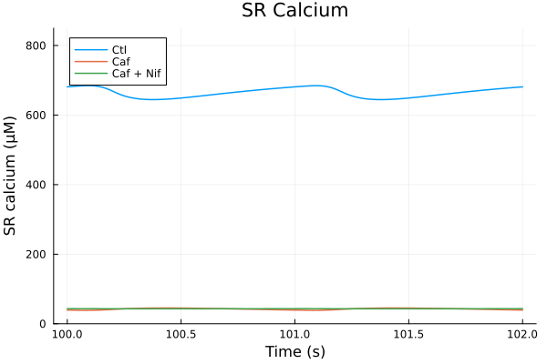
i = (sys.t / 1000, sys.CaMKAct * 100)
plot(sol, idxs=i, title="Simulation", lab="Ctl")
plot!(sol_caf, idxs=i, lab="Caf")
plot!(sol_nif_caf, idxs=i, lab="Caf + Nif", ylabel="CaMKII active fraction (%)", xlabel="Time (s)")
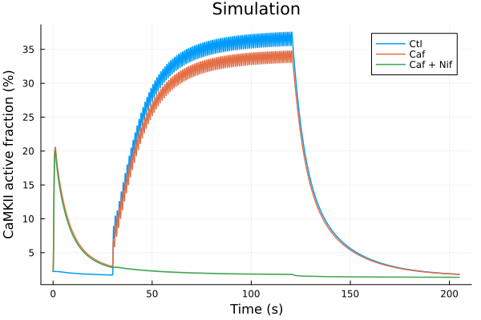
savefig("caf-camkact.pdf")
"/home/github/actions-runner-1/_work/camkii-cardiomyocyte-model/camkii-cardiomyocyte-model/.cache/docs/caf-camkact.pdf"
experiments
chemicaldf = CSV.read(joinpath(@__DIR__, "data/CaMKAR-chemical.csv"), DataFrame)
ts = Dates.value.(chemicaldf[!, "Time"]) ./ 10^9
ctl = chemicaldf[!, "Ctrl Mean"]
ctl_error = chemicaldf[!, "Ctrl SD"] ./ sqrt.(chemicaldf[!, "Ctrl N"])
caf = chemicaldf[!, "caffeine 20mM Mean"]
caf_error = chemicaldf[!, "caffeine 20mM SD"] ./ sqrt.(chemicaldf[!, "caffeine 20mM N"])
plot(ts, ctl, yerr=ctl_error, lab="Control", color=:blue, markerstrokecolor=:blue)
plot!(ts, caf, yerr=caf_error, lab="Caffeine 20mM", color=:red, markerstrokecolor=:red)
plot!(xlabel="Time (s)", ylabel="CaMKII activity (A.U.)", title= "Experiment")
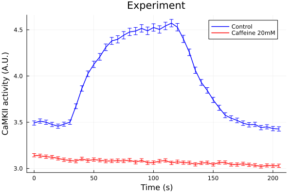
savefig("caf-exp.pdf")
"/home/github/actions-runner-1/_work/camkii-cardiomyocyte-model/camkii-cardiomyocyte-model/.cache/docs/caf-exp.pdf"
This notebook was generated using Literate.jl.